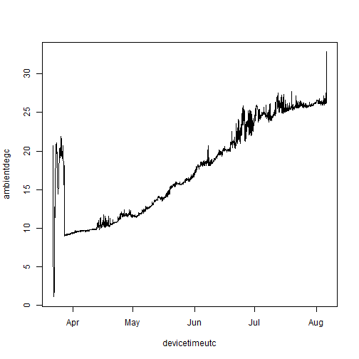
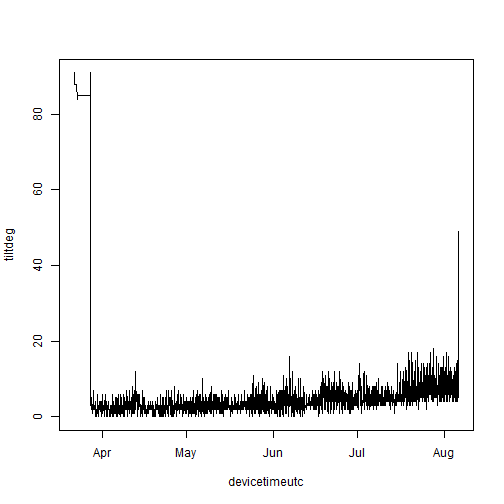
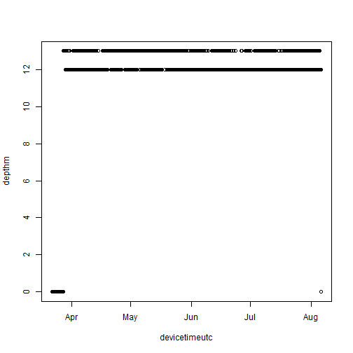
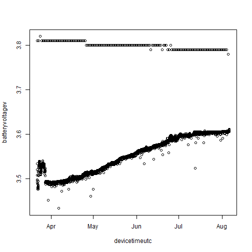
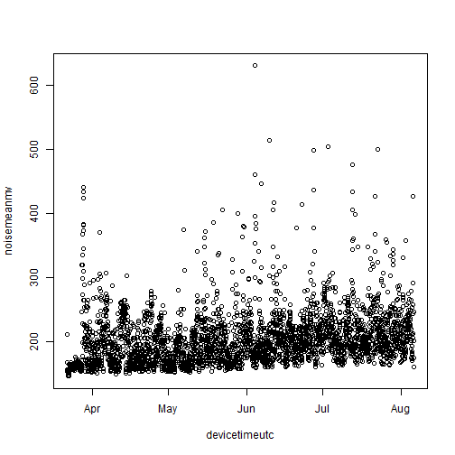
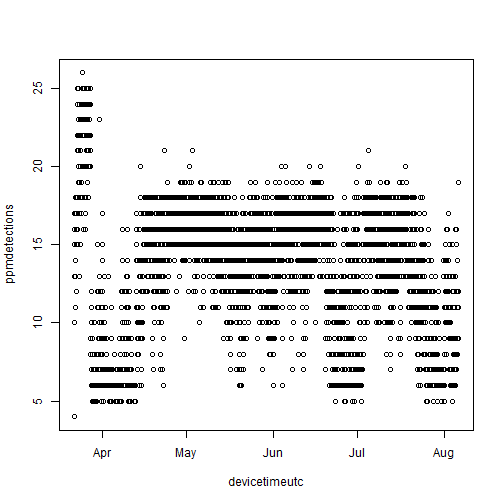
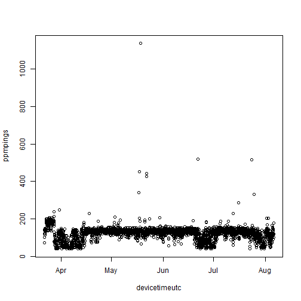

Extracting environmental data with `rvdat`
2024-01-10
Source:vignettes/matos-rvdat.Rmd
matos-rvdat.RmdWe often want to extract the environmental data that some of our
receivers log. You can do this by going into Innovasea’s VUE or Fathom
Connect programs and clicking a bunch of buttons, or you can do it
programmatically and reproducibly by combining matos and rvdat.
Download the data
If you’re an ACT member, log into your MATOS account. If you’re not, we’ll skip to the next section and assume you already have your files ready.
matos_login()
#> ! Please log in.
#> v Login successful!Next, tell rvdat the location of the
vdat.exe executable (check out the rvdat documentation
for more information on this).
Using matos, I’m going to find the VDAT files associated
with the Mid-Bay
Chesapeake Backbone array. Note that things like temperature and
tilt are logged within the VRL/VDAT files, and so will be under the
“detections” file type.
detection_files <- list_project_files(
project = "UMCES Chesapeake Backbone, Mid-Bay",
file_type = "detections"
)
head(detection_files)
#> project file_type upload_date
#> 3 161 Tag Detections - .vfl file 2024-08-06
#> 4 161 Tag Detections - .vfl file 2024-08-06
#> 5 161 Tag Detections - .vfl file 2024-08-06
#> 6 161 Tag Detections - .vfl file 2024-08-06
#> 7 161 Tag Detections - .vfl file 2024-08-06
#> 8 161 Tag Detections - .vfl file 2024-08-06
#> file_name
#> 3 VR2AR_551436_20240805_1.vrl
#> 4 VR2AR_551431_20240805_1.vrl
#> 5 VR2AR_550744_20240805_1.vrl
#> 6 VR2AR_550740_20240805_1.vrl
#> 7 VR2AR_550737_20240805_1.vrl
#> 8 VR2AR_545764_20240805_1.vrl
#> url
#> 3 https://matos.asascience.com/projectfile/download/13872
#> 4 https://matos.asascience.com/projectfile/download/13871
#> 5 https://matos.asascience.com/projectfile/download/13870
#> 6 https://matos.asascience.com/projectfile/download/13869
#> 7 https://matos.asascience.com/projectfile/download/13868
#> 8 https://matos.asascience.com/projectfile/download/13867I’ll download the first file into a temporary directory.
get_project_file(
url = detection_files$url[1],
out_dir = tempdir()
)
#>
#> -- Downloading files ---------------------------------------------------
#> v File(s) saved to:
#> C:\Users\darpa2\AppData\Local\Temp\RtmpusjJ5z\VR2AR_551436_20240805_1.vrl
#> [1] "C:\\Users\\darpa2\\AppData\\Local\\Temp\\RtmpusjJ5z\\VR2AR_551436_20240805_1.vrl"
vrl_file <- list.files(tempdir(), pattern = "vrl$", full.names = T)Convert VRL using rvdat
Now, I’ll use rvdat::vdat_to_folder to convert that file
into a folder of CSV files, each one representing one data type.
vdat_to_folder(
vrl_file,
outdir = tempdir()
)
#> 0.0% - Converting File
0.9% - Converting File
1.1% - Converting File
1.3% - Converting File
1.4% - Converting File
1.6% - Converting File
1.8% - Converting File
1.9% - Converting File
2.1% - Converting File
2.3% - Converting File
2.4% - Converting File
2.6% - Converting File
2.8% - Converting File
2.9% - Converting File
3.1% - Converting File
3.3% - Converting File
3.4% - Converting File
3.6% - Converting File
3.8% - Converting File
3.9% - Converting File
4.1% - Converting File
4.3% - Converting File
4.5% - Converting File
4.6% - Converting File
4.8% - Converting File
5.0% - Converting File
5.1% - Converting File
5.3% - Converting File
5.5% - Converting File
5.6% - Converting File
5.8% - Converting File
6.0% - Converting File
6.1% - Converting File
6.3% - Converting File
6.5% - Converting File
6.6% - Converting File
6.8% - Converting File
7.0% - Converting File
7.1% - Converting File
7.3% - Converting File
7.5% - Converting File
7.6% - Converting File
7.8% - Converting File
8.0% - Converting File
8.2% - Converting File
8.3% - Converting File
8.5% - Converting File
8.7% - Converting File
8.8% - Converting File
9.0% - Converting File
9.2% - Converting File
9.3% - Converting File
9.5% - Converting File
9.7% - Converting File
9.8% - Converting File
10.0% - Converting File
10.2% - Converting File
10.3% - Converting File
10.5% - Converting File
10.7% - Converting File
10.8% - Converting File
11.0% - Converting File
11.2% - Converting File
11.3% - Converting File
11.5% - Converting File
11.7% - Converting File
11.8% - Converting File
12.0% - Converting File
12.2% - Converting File
12.4% - Converting File
12.5% - Converting File
12.7% - Converting File
12.9% - Converting File
13.0% - Converting File
13.2% - Converting File
13.4% - Converting File
13.5% - Converting File
13.7% - Converting File
13.9% - Converting File
14.0% - Converting File
14.2% - Converting File
14.4% - Converting File
14.5% - Converting File
14.7% - Converting File
14.9% - Converting File
15.0% - Converting File
15.2% - Converting File
15.4% - Converting File
15.5% - Converting File
15.7% - Converting File
15.9% - Converting File
16.1% - Converting File
16.2% - Converting File
16.4% - Converting File
16.6% - Converting File
16.7% - Converting File
16.9% - Converting File
17.1% - Converting File
17.2% - Converting File
17.4% - Converting File
17.6% - Converting File
17.7% - Converting File
17.9% - Converting File
18.1% - Converting File
18.2% - Converting File
18.4% - Converting File
18.6% - Converting File
18.7% - Converting File
18.9% - Converting File
19.1% - Converting File
19.2% - Converting File
19.4% - Converting File
19.6% - Converting File
19.7% - Converting File
19.9% - Converting File
20.1% - Converting File
20.3% - Converting File
20.4% - Converting File
20.6% - Converting File
20.8% - Converting File
20.9% - Converting File
21.1% - Converting File
21.3% - Converting File
21.4% - Converting File
21.6% - Converting File
21.8% - Converting File
21.9% - Converting File
22.1% - Converting File
22.3% - Converting File
22.4% - Converting File
22.6% - Converting File
22.8% - Converting File
22.9% - Converting File
23.1% - Converting File
23.3% - Converting File
23.4% - Converting File
23.6% - Converting File
23.8% - Converting File
23.9% - Converting File
24.1% - Converting File
24.3% - Converting File
24.5% - Converting File
24.6% - Converting File
24.8% - Converting File
25.0% - Converting File
25.1% - Converting File
25.3% - Converting File
25.5% - Converting File
25.6% - Converting File
25.8% - Converting File
26.0% - Converting File
26.1% - Converting File
26.3% - Converting File
26.5% - Converting File
26.6% - Converting File
26.8% - Converting File
27.0% - Converting File
27.1% - Converting File
27.3% - Converting File
27.5% - Converting File
27.6% - Converting File
27.8% - Converting File
28.0% - Converting File
28.2% - Converting File
28.3% - Converting File
28.5% - Converting File
28.7% - Converting File
28.8% - Converting File
29.0% - Converting File
29.2% - Converting File
29.3% - Converting File
29.5% - Converting File
29.7% - Converting File
29.8% - Converting File
30.0% - Converting File
30.2% - Converting File
30.3% - Converting File
30.5% - Converting File
30.7% - Converting File
30.8% - Converting File
31.0% - Converting File
31.2% - Converting File
31.3% - Converting File
31.5% - Converting File
31.7% - Converting File
31.8% - Converting File
32.0% - Converting File
32.2% - Converting File
32.4% - Converting File
32.5% - Converting File
32.7% - Converting File
32.9% - Converting File
33.0% - Converting File
33.2% - Converting File
33.4% - Converting File
33.5% - Converting File
33.7% - Converting File
33.9% - Converting File
34.0% - Converting File
34.2% - Converting File
34.4% - Converting File
34.5% - Converting File
34.7% - Converting File
34.9% - Converting File
35.0% - Converting File
35.2% - Converting File
35.4% - Converting File
35.5% - Converting File
35.7% - Converting File
35.9% - Converting File
36.1% - Converting File
36.2% - Converting File
36.4% - Converting File
36.6% - Converting File
36.7% - Converting File
36.9% - Converting File
37.1% - Converting File
37.2% - Converting File
37.4% - Converting File
37.6% - Converting File
37.7% - Converting File
37.9% - Converting File
38.1% - Converting File
38.2% - Converting File
38.4% - Converting File
38.6% - Converting File
38.7% - Converting File
38.9% - Converting File
39.1% - Converting File
39.2% - Converting File
39.4% - Converting File
39.6% - Converting File
39.7% - Converting File
39.9% - Converting File
40.1% - Converting File
40.3% - Converting File
40.4% - Converting File
40.6% - Converting File
40.8% - Converting File
40.9% - Converting File
41.1% - Converting File
41.3% - Converting File
41.4% - Converting File
41.6% - Converting File
41.8% - Converting File
41.9% - Converting File
42.1% - Converting File
42.3% - Converting File
42.4% - Converting File
42.6% - Converting File
42.8% - Converting File
42.9% - Converting File
43.1% - Converting File
43.3% - Converting File
43.4% - Converting File
43.6% - Converting File
43.8% - Converting File
43.9% - Converting File
44.1% - Converting File
44.3% - Converting File
44.5% - Converting File
44.6% - Converting File
44.8% - Converting File
45.0% - Converting File
45.1% - Converting File
45.3% - Converting File
45.5% - Converting File
45.6% - Converting File
45.8% - Converting File
46.0% - Converting File
46.1% - Converting File
46.3% - Converting File
46.5% - Converting File
46.6% - Converting File
46.8% - Converting File
47.0% - Converting File
47.1% - Converting File
47.3% - Converting File
47.5% - Converting File
47.6% - Converting File
47.8% - Converting File
48.0% - Converting File
48.2% - Converting File
48.3% - Converting File
48.5% - Converting File
48.7% - Converting File
48.8% - Converting File
49.0% - Converting File
49.2% - Converting File
49.3% - Converting File
49.5% - Converting File
49.7% - Converting File
49.8% - Converting File
50.0% - Converting File
50.2% - Converting File
50.3% - Converting File
50.5% - Converting File
50.7% - Converting File
50.8% - Converting File
51.0% - Converting File
51.2% - Converting File
51.3% - Converting File
51.5% - Converting File
51.7% - Converting File
51.8% - Converting File
52.0% - Converting File
52.2% - Converting File
52.4% - Converting File
52.5% - Converting File
52.7% - Converting File
52.9% - Converting File
53.0% - Converting File
53.2% - Converting File
53.4% - Converting File
53.5% - Converting File
53.7% - Converting File
53.9% - Converting File
54.0% - Converting File
54.2% - Converting File
54.4% - Converting File
54.5% - Converting File
54.7% - Converting File
54.9% - Converting File
55.0% - Converting File
55.2% - Converting File
55.4% - Converting File
55.5% - Converting File
55.7% - Converting File
55.9% - Converting File
56.1% - Converting File
56.2% - Converting File
56.4% - Converting File
56.6% - Converting File
56.7% - Converting File
56.9% - Converting File
57.1% - Converting File
57.2% - Converting File
57.4% - Converting File
57.6% - Converting File
57.7% - Converting File
57.9% - Converting File
58.1% - Converting File
58.2% - Converting File
58.4% - Converting File
58.6% - Converting File
58.7% - Converting File
58.9% - Converting File
59.1% - Converting File
59.2% - Converting File
59.4% - Converting File
59.6% - Converting File
59.7% - Converting File
59.9% - Converting File
60.1% - Converting File
60.3% - Converting File
60.4% - Converting File
60.6% - Converting File
60.8% - Converting File
60.9% - Converting File
61.1% - Converting File
61.3% - Converting File
61.4% - Converting File
61.6% - Converting File
61.8% - Converting File
61.9% - Converting File
62.1% - Converting File
62.3% - Converting File
62.4% - Converting File
62.6% - Converting File
62.8% - Converting File
62.9% - Converting File
63.1% - Converting File
63.3% - Converting File
63.4% - Converting File
63.6% - Converting File
63.8% - Converting File
63.9% - Converting File
64.1% - Converting File
64.3% - Converting File
64.5% - Converting File
64.6% - Converting File
64.8% - Converting File
65.0% - Converting File
65.1% - Converting File
65.3% - Converting File
65.5% - Converting File
65.6% - Converting File
65.8% - Converting File
66.0% - Converting File
66.1% - Converting File
66.3% - Converting File
66.5% - Converting File
66.6% - Converting File
66.8% - Converting File
67.0% - Converting File
67.1% - Converting File
67.3% - Converting File
67.5% - Converting File
67.6% - Converting File
67.8% - Converting File
68.0% - Converting File
68.2% - Converting File
68.3% - Converting File
68.5% - Converting File
68.7% - Converting File
68.8% - Converting File
69.0% - Converting File
69.2% - Converting File
69.3% - Converting File
69.5% - Converting File
69.7% - Converting File
69.8% - Converting File
70.0% - Converting File
70.2% - Converting File
70.3% - Converting File
70.5% - Converting File
70.7% - Converting File
70.8% - Converting File
71.0% - Converting File
71.2% - Converting File
71.3% - Converting File
71.5% - Converting File
71.7% - Converting File
71.8% - Converting File
72.0% - Converting File
72.2% - Converting File
72.4% - Converting File
72.5% - Converting File
72.7% - Converting File
72.9% - Converting File
73.0% - Converting File
73.2% - Converting File
73.4% - Converting File
73.5% - Converting File
73.7% - Converting File
73.9% - Converting File
74.0% - Converting File
74.2% - Converting File
74.4% - Converting File
74.5% - Converting File
74.7% - Converting File
74.9% - Converting File
75.0% - Converting File
75.2% - Converting File
75.4% - Converting File
75.5% - Converting File
75.7% - Converting File
75.9% - Converting File
76.1% - Converting File
76.2% - Converting File
76.4% - Converting File
76.6% - Converting File
76.7% - Converting File
76.9% - Converting File
77.1% - Converting File
77.2% - Converting File
77.4% - Converting File
77.6% - Converting File
77.7% - Converting File
77.9% - Converting File
78.1% - Converting File
78.2% - Converting File
78.4% - Converting File
78.6% - Converting File
78.7% - Converting File
78.9% - Converting File
79.1% - Converting File
79.2% - Converting File
79.4% - Converting File
79.6% - Converting File
79.7% - Converting File
79.9% - Converting File
80.1% - Converting File
80.3% - Converting File
80.4% - Converting File
80.6% - Converting File
80.8% - Converting File
80.9% - Converting File
81.1% - Converting File
81.3% - Converting File
81.4% - Converting File
81.6% - Converting File
81.8% - Converting File
81.9% - Converting File
82.1% - Converting File
82.3% - Converting File
82.4% - Converting File
82.6% - Converting File
82.8% - Converting File
82.9% - Converting File
83.1% - Converting File
83.3% - Converting File
83.4% - Converting File
83.6% - Converting File
83.8% - Converting File
83.9% - Converting File
84.1% - Converting File
84.3% - Converting File
84.5% - Converting File
84.6% - Converting File
84.8% - Converting File
85.0% - Converting File
85.1% - Converting File
85.3% - Converting File
85.5% - Converting File
85.6% - Converting File
85.8% - Converting File
86.0% - Converting File
86.1% - Converting File
86.3% - Converting File
86.5% - Converting File
86.6% - Converting File
86.8% - Converting File
87.0% - Converting File
87.1% - Converting File
87.3% - Converting File
87.5% - Converting File
87.6% - Converting File
87.8% - Converting File
88.0% - Converting File
88.2% - Converting File
88.3% - Converting File
88.5% - Converting File
88.7% - Converting File
88.8% - Converting File
89.0% - Converting File
89.2% - Converting File
89.3% - Converting File
89.5% - Converting File
89.7% - Converting File
89.8% - Converting File
90.0% - Converting File
90.2% - Converting File
90.3% - Converting File
90.5% - Converting File
90.7% - Converting File
90.8% - Converting File
91.0% - Converting File
91.2% - Converting File
91.3% - Converting File
91.5% - Converting File
91.7% - Converting File
91.8% - Converting File
92.0% - Converting File
92.2% - Converting File
92.4% - Converting File
92.5% - Converting File
92.7% - Converting File
92.9% - Converting File
93.0% - Converting File
93.2% - Converting File
93.4% - Converting File
93.5% - Converting File
93.7% - Converting File
93.9% - Converting File
94.0% - Converting File
94.2% - Converting File
94.4% - Converting File
94.5% - Converting File
94.7% - Converting File
94.9% - Converting File
95.0% - Converting File
95.2% - Converting File
95.4% - Converting File
95.5% - Converting File
95.7% - Converting File
95.9% - Converting File
96.1% - Converting File
96.2% - Converting File
96.4% - Converting File
96.6% - Converting File
96.7% - Converting File
96.9% - Converting File
97.1% - Converting File
97.2% - Converting File
97.4% - Converting File
97.6% - Converting File
97.7% - Converting File
97.9% - Converting File
98.1% - Converting File
98.2% - Converting File
98.4% - Converting File
98.6% - Converting File
98.7% - Converting File
98.9% - Converting File
99.1% - Converting File
99.2% - Converting File
99.4% - Converting File
99.6% - Converting File
99.7% - Converting File
100.0% - Converting File
#> v File converted:
#> C:\Users\darpa2\AppData\Local\Temp\RtmpusjJ5z/VR2AR_551436_20240805_1.vrl
#> i Files saved in:
#> C:\Users\darpa2\AppData\Local\Temp\RtmpusjJ5z/VR2AR_551436_20240805_1.csv-fathom-splitThere are quite a few files in there, but for this we’re going to
focus on the temperature records stored in TEMP.csv.
list.files(tempdir(), pattern = "fathom-split", full.names = T) |>
list.files()
#> [1] "ATTITUDE.csv" "BATTERY.csv"
#> [3] "CFG_CHANNEL.csv" "CFG_STUDY.csv"
#> [5] "CFG_TRANSMITTER.csv" "CLOCK_REF.csv"
#> [7] "DATA_SOURCE_FILE.csv" "DEPTH.csv"
#> [9] "DET.csv" "DIAG.csv"
#> [11] "EVENT.csv" "EVENT_INIT.csv"
#> [13] "EVENT_OFFLOAD.csv" "HEALTH_VR2AR.csv"
#> [15] "TEMP.csv"
bwt_file <- list.files(tempdir(), pattern = "TEMP", full.names = T, recursive = T)Read it into R
Let’s read in the data.
read.csv(bwt_file)
#> Error in read.table(file = file, header = header, sep = sep, quote = quote, : more columns than column namesAn error, oh no! Let’s see what’s causing it.
read.csv(bwt_file,
header = FALSE,
nrows = 5
)
#> V1 V2
#> 1 \357\273\277VEMCO DATA LOG 2.0.0
#> 2 TEMP_DESC Device Time (UTC)
#> 3 TEMP 2024-03-21 20:00:00
#> 4 TEMP 2024-03-21 21:00:00
#> 5 TEMP 2024-03-21 22:00:00
#> V3 V4
#> 1 vdat-11.0.1-20240830-d01c0d-release
#> 2 Time Time Offset (h)
#> 3
#> 4
#> 5
#> V5 V6 V7 V8
#> 1
#> 2 Time Correction (s) Model Serial Number Ambient (deg C)
#> 3 VR2AR-69 551436 20.722
#> 4 VR2AR-69 551436 13.957
#> 5 VR2AR-69 551436 10.479
#> V9
#> 1
#> 2 Internal (deg C)
#> 3
#> 4
#> 5Ah, the data doesn’t really start until the second row. Skip the first one and take a look.
bwt <- read.csv(
bwt_file,
skip = 1
)
head(bwt)
#> TEMP_DESC Device.Time..UTC. Time Time.Offset..h.
#> 1 TEMP 2024-03-21 20:00:00 NA NA
#> 2 TEMP 2024-03-21 21:00:00 NA NA
#> 3 TEMP 2024-03-21 22:00:00 NA NA
#> 4 TEMP 2024-03-21 23:00:00 NA NA
#> 5 TEMP 2024-03-22 00:00:00 NA NA
#> 6 TEMP 2024-03-22 01:00:00 NA NA
#> Time.Correction..s. Model Serial.Number Ambient..deg.C.
#> 1 NA VR2AR-69 551436 20.722
#> 2 NA VR2AR-69 551436 13.957
#> 3 NA VR2AR-69 551436 10.479
#> 4 NA VR2AR-69 551436 8.328
#> 5 NA VR2AR-69 551436 6.157
#> 6 NA VR2AR-69 551436 5.136
#> Internal..deg.C.
#> 1 NA
#> 2 NA
#> 3 NA
#> 4 NA
#> 5 NA
#> 6 NAGreat! The data are in. I’m going to clean up the names a little bit and convert the time column from a character string to POSIX time.
names(bwt) <- gsub("[_\\.]", "", tolower(names(bwt)))
names(bwt)
#> [1] "tempdesc" "devicetimeutc" "time"
#> [4] "timeoffseth" "timecorrections" "model"
#> [7] "serialnumber" "ambientdegc" "internaldegc"
bwt$devicetimeutc <- as.POSIXct(bwt$devicetimeutc,
tz = "UTC",
format = "%F %T"
)
head(bwt)
#> tempdesc devicetimeutc time timeoffseth timecorrections
#> 1 TEMP 2024-03-21 20:00:00 NA NA NA
#> 2 TEMP 2024-03-21 21:00:00 NA NA NA
#> 3 TEMP 2024-03-21 22:00:00 NA NA NA
#> 4 TEMP 2024-03-21 23:00:00 NA NA NA
#> 5 TEMP 2024-03-22 00:00:00 NA NA NA
#> 6 TEMP 2024-03-22 01:00:00 NA NA NA
#> model serialnumber ambientdegc internaldegc
#> 1 VR2AR-69 551436 20.722 NA
#> 2 VR2AR-69 551436 13.957 NA
#> 3 VR2AR-69 551436 10.479 NA
#> 4 VR2AR-69 551436 8.328 NA
#> 5 VR2AR-69 551436 6.157 NA
#> 6 VR2AR-69 551436 5.136 NASee what we’ve got
Now that we have our time series, let’s see what it looks like!
plot(ambientdegc ~ devicetimeutc,
data = bwt,
type = "l"
)
Other variables
We can pull out other variables in a similar manner. Take, for
example, receiver tilt, located in ATTITUDE.csv.
env_import <- function(file) {
hold <- list.files(
tempdir(),
pattern = file,
full.names = T,
recursive = T
) |>
read.csv(skip = 1)
names(hold) <- gsub("[_\\.]", "", tolower(names(hold)))
hold$devicetimeutc <- as.POSIXct(hold$devicetimeutc,
tz = "UTC",
format = "%F %T"
)
hold
}
tilt <- env_import("ATTITUDE")
plot(tiltdeg ~ devicetimeutc, data = tilt, type = "l")
Depth, in DEPTH.csv:
depth <- env_import("DEPTH")
plot(depthm ~ devicetimeutc, data = depth)
Battery, in BATTERY.csv:
battery <- env_import("BATTERY")
plot(batteryvoltagev ~ devicetimeutc, data = battery)
Noise, which is actually in the diagnostic file
DIAG.csv:
diagnostics <- env_import("DIAG")
plot(noisemeanmv ~ devicetimeutc, data = diagnostics) Hourly summaries of pings and detections are also in the diagnositc file:
plot(ppmdetections ~ devicetimeutc, data = diagnostics)
plot(ppmpings ~ devicetimeutc, data = diagnostics)
But are really located in DET.csv.
dets <- env_import("DET")
head(dets[, ])
#> detdesc devicetimeutc time timeoffseth timecorrections model
#> 1 DET 2024-03-21 19:40:52 NA NA NA VR2AR-69
#> 2 DET 2024-03-21 19:45:01 NA NA NA VR2AR-69
#> 3 DET 2024-03-21 19:50:11 NA NA NA VR2AR-69
#> 4 DET 2024-03-21 19:59:46 NA NA NA VR2AR-69
#> 5 DET 2024-03-21 20:06:18 NA NA NA VR2AR-69
#> 6 DET 2024-03-21 20:07:05 NA NA NA VR2AR-69
#> serialnumber channel detectiontype fullid id rawdata
#> 1 551436 1 PPM A69-1601-60140 60140 NA
#> 2 551436 1 PPM A69-1601-60838 60838 NA
#> 3 551436 1 PPM A69-1601-60140 60140 NA
#> 4 551436 1 PPM A69-1601-60140 60140 NA
#> 5 551436 1 PPM A69-1601-60838 60838 NA
#> 6 551436 1 PPM A69-1601-60228 60228 NA
#> transmitterserial signalstrengthdb noisedb gaindb qualityscore
#> 1 NA NA NA NA NA
#> 2 NA NA NA NA NA
#> 3 NA NA NA NA NA
#> 4 NA NA NA NA NA
#> 5 NA NA NA NA NA
#> 6 NA NA NA NA NA
#> stationname latitude longitude gpshdop
#> 1 NA NA NA NA
#> 2 NA NA NA NA
#> 3 NA NA NA NA
#> 4 NA NA NA NA
#> 5 NA NA NA NA
#> 6 NA NA NA NAThese data were gleaned from a particular receiver programmed in a
particular way – note that many of the data fields are empty! Depending
on the receiver, how you programmed it, and the arguments you passed to
rvdat (time correction, anyone?), your split CSV could look
rather different.